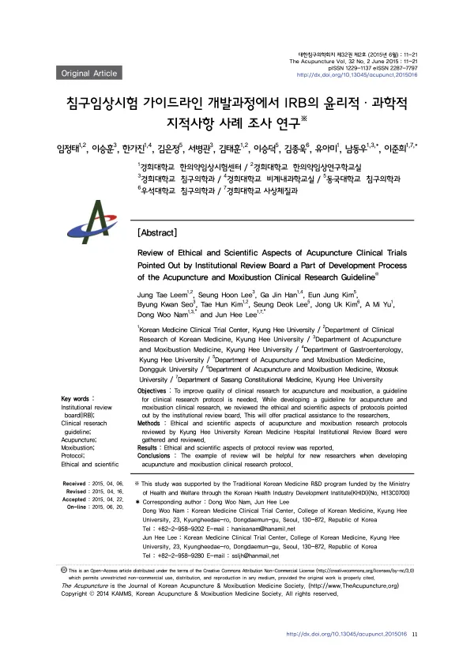

Review of Ethical and Scientific Aspects of Acupuncture Clinical Trials Pointed Out by Institutional Review Board a Part of Development Process of the Acupuncture and Moxibustion Clinical Research Guideline※
Leem JT, Lee SH, Han GJ, Kim EJ, Seo BK, Kim TH, Lee SD, Kim JU, Yu AM, Nam DW, Lee JH
The Acupuncture 32(2):11-21

첫 장 · 오픈액세스First page · open access
논문 소개Summary
침구 임상시험은 늘고 있지만 질이 높지 않다는 지적이 되풀이되어 왔습니다. 보고 지침으로 STRICTA가 있으나 침 치료를 어떻게 적을지에 국한되어 있어, 연구계획서를 쓰고 기관생명윤리위원회(IRB)에 서류를 내는 단계의 물음에는 답하지 못합니다. 그래서 여러 연구자가 같은 지적을 되풀이해 받고 연구자와 심의위원 모두 시간을 씁니다.
경희대학교한방병원 한의약임상시험센터가 침구임상시험 가이드라인을 만들면서, 그 안에 실제 사례를 넣기 위해 수행한 조사입니다. 개발팀 5명, 집필위원회 10명(3개 한의과대학 침구의학과 교수 7인, 전문의 2인, 통계전문가 1인), 검토위원회 6명을 두고 표준작업지침서에 따라 원고를 쓰고 상호 검토했습니다. 가이드라인은 임상연구 기본사항, 연구방법, 침구시술, 통계, 보고지침, 윤리적 문제, IRB 심의 사례의 일곱 장으로 짰습니다.
사례는 2008년부터 2014년까지 경희대학교한방병원 침구의학과에서 시행된 침·뜸 임상연구 20건의 IRB 지적사항을 모아 윤리적 측면과 과학적 측면으로 나눴습니다. 윤리적 측면에서는 동의서 및 설명문이 10건으로 가장 많았고 구비서류 6건, 연구자 3건이 뒤를 이었습니다. 과학적 측면에서는 통계분석과 평가변수가 각각 11건, 선정제외기준 9건, 맹검 8건이었습니다.
무엇을 어떻게 고쳤는지도 함께 실었습니다. 진통제를 금지하던 관행은 피험자에게 윤리적으로 문제가 될 수 있어 복용을 허용하고 복용 횟수를 평가변수로 삼도록 권고했습니다. 아무 처치 없이 기다리게 하는 대기군은 비윤리적이므로 생활관리 교육을 넣도록 했습니다. 보상비를 종료 시 한꺼번에 주면 계속 참여하라는 유인이 되므로 방문마다 나눠 주도록 고쳤습니다. 증례기록지와 동의서에서 주민등록번호와 전화번호를 빼도록 한 것은 개인정보 보호와 배정은폐 두 가지 이유였습니다. 과학적 측면에서는 세 군 이상이면 t-검정이 아니라 분산분석으로 피험자 수를 산출하도록, 표본이 적거나 정규성을 만족하지 않을 때를 대비해 비모수 검정을 미리 적어 두도록 권고했습니다.
한계는 단일 기관 20건이라는 점입니다. 침구 임상시험 전반으로 일반화하기 어렵고, 국내의 규정과 현실만 반영했으므로 국제 기준이 되려면 다국가 협력이 필요합니다. 그럼에도 IRB에서 실제로 무엇이 지적되는지를 모아 보고한 것은 국내에서 이 연구가 처음이었습니다.
Acupuncture and moxibustion trials keep increasing, and the criticism that their quality is low keeps recurring. STRICTA exists as a reporting guideline, but it covers only how to describe the acupuncture treatment itself and answers none of the questions that arise while writing a protocol and preparing submissions to an institutional review board. So researchers are told the same things over and over, and both they and the reviewers spend time on it.
This survey was carried out by the Korean Medicine Clinical Trial Center of Kyung Hee University Korean Medicine Hospital while developing a guideline for acupuncture and moxibustion trials, in order to put real examples inside it. A development team of five, a writing committee of ten (seven professors of acupuncture and moxibustion medicine from three colleges of Korean medicine, two specialists and one statistician) and a review committee of six wrote and cross-checked the text under a standard operating procedure. The guideline runs to seven chapters: fundamentals of clinical research, methods, acupuncture and moxibustion procedures, statistical considerations, reporting guidelines, ethical issues, and worked examples of IRB review comments.
The examples were gathered from IRB comments on 20 acupuncture and moxibustion studies conducted in the department between 2008 and 2014, sorted into ethical and scientific aspects. On the ethical side, consent forms and information sheets drew the most comments (10), followed by required documentation (6) and investigators (3). On the scientific side, statistical analysis and outcome variables drew 11 each, eligibility criteria 9 and blinding 8.
The paper records what was changed and why. Restricting analgesics can be ethically problematic for participants, so the recommendation was to permit them and count the number of doses as an outcome variable. Leaving a waiting-list group with no intervention at all is unethical, so lifestyle education was added for controls. Paying compensation as a lump sum at the end acts as an inducement to keep participating, so it was changed to instalments at each visit. Resident registration numbers and telephone numbers were removed from case report forms and consent documents for two reasons: personal data protection and allocation concealment. On the scientific side, sample size for three or more groups was to be calculated by ANOVA rather than a t-test, and nonparametric tests were to be specified in advance against small samples or failed normality.
The limitation is that these are 20 cases from one institution. They cannot be generalised across acupuncture and moxibustion trials, and since only domestic regulations and circumstances are reflected, international standing would require multinational collaboration. Even so, this was the first report in Korea to collect what institutional review boards actually raise.
인용Cite
Leem JT, Lee SH, Han GJ, Kim EJ, Seo BK, Kim TH, Lee SD, Kim JU, Yu AM, Nam DW, Lee JH. Review of Ethical and Scientific Aspects of Acupuncture Clinical Trials Pointed Out by Institutional Review Board a Part of Development Process of the Acupuncture and Moxibustion Clinical Research Guideline※. The Acupuncture. 2015;32(2):11-21. doi:10.13045/acupunct.2015016